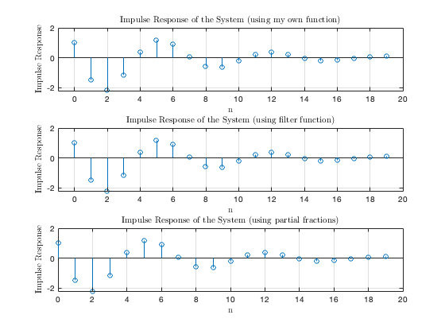
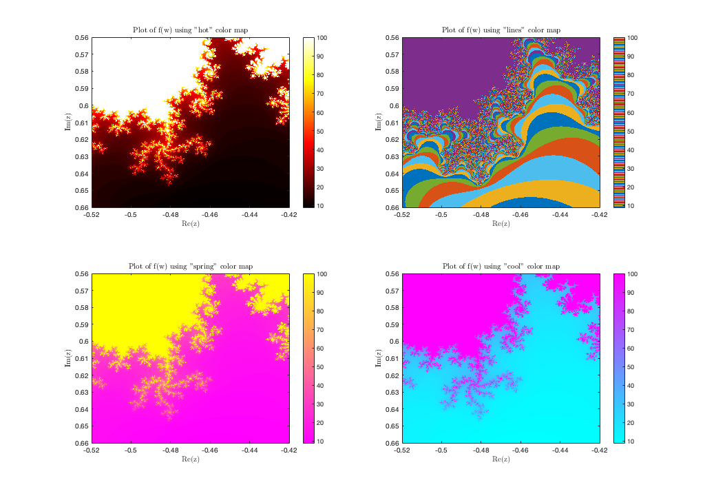

Contents
clc; close all; clear;
set(0,'defaultTextInterpreter','latex');
del = @(n)double(n==0);
Question 1: Trasnfer Function
figure;
N = 20;
n = [0:N-1];
impulse = del(n);
subplot(3,1,1);
impulse_response = difference_equation(impulse,N);
impulse_response_length = (0:length(impulse_response)-1);
stem(n,impulse_response);
xlabel('n');
xlim([-1 20]);
ylabel('Impulse Response');
title('Impulse Response of the System (using my own function)');
grid on;
subplot(3,1,2);
numerator_coefficients = [1,-2.5];
denomenator_coefficients = [1,-1,0.7];
impulse_response = filter(numerator_coefficients,denomenator_coefficients,impulse);
stem(n,impulse_response);
xlabel('n');
xlim([-1 20]);
ylabel('Impulse Response');
title('Impulse Response of the System (using filter function)');
grid on;
subplot(3,1,3);
numerator_coefficients = [1,-2.5];
denomenator_coefficients = [1,-1,0.7];
[r,p,k] = residue(numerator_coefficients,denomenator_coefficients)
disp('Residues:');
disp(r);
disp('Poles:');
disp(p);
impulse_response = r(1)*p(1).^n + r(2)*p(2).^n;
stem(n, impulse_response);
xlabel('n');
ylabel('Impulse Response');
title('Impulse Response of the System (using partial fractions)');
grid on;

Question 2
a = -0.52;
b = 0.56;
L = 0.1;
step_size = 0.0001
real_range = [a:step_size:a+L];
imaginary_range = [b:step_size:b+L];
[real, imaginary] = meshgrid(real_range, imaginary_range);
W = complex(real, imaginary);
f = zeros(size(W));
for r = 1:length(W)
for c = 1:length(W(:,r))
zn = 0;
for i = 1:100
zn = zn*zn + W(r,c);
f(r,c) = i;
if(abs(zn)>2)
break;
end
end
end
end
figure1=figure('Position', [100, 100, 1024, 1200]);
subplot(2,2,1);
imagesc(real_range, imaginary_range, f);
colormap(subplot(2,2,1),hot);
colorbar;
xlabel('Re(z)');
ylabel('Im(z)');
title('Plot of f(w) using "hot" color map');
xlim([a, a + L]);
ylim([b, b + L]);
subplot(2,2,2);
imagesc(real_range, imaginary_range, f);
colormap(subplot(2,2,2),lines);
colorbar;
xlabel('Re(z)');
ylabel('Im(z)');
title('Plot of f(w) using "lines" color map');
xlim([a, a + L]);
ylim([b, b + L]);
subplot(2,2,3);
imagesc(real_range, imaginary_range, f);
colormap(subplot(2,2,3),spring);
colorbar;
xlabel('Re(z)');
ylabel('Im(z)');
title('Plot of f(w) using "spring" color map');
xlim([a, a + L]);
ylim([b, b + L]);
subplot(2,2,4);
imagesc(real_range, imaginary_range, f);
colormap(subplot(2,2,4),cool);
colorbar;
xlabel('Re(z)');
ylabel('Im(z)');
title('Plot of f(w) using "cool" color map');
xlim([a, a + L]);
ylim([b, b + L]);
step_size =
1.0000e-04

Functions
function y = difference_equation(x,N)
y = zeros(1, N);
y(1) = x(1);
y(2) = x(2)-2.5*x(1)+y(1);
for n = 3:N
y(n) = x(n) - 2.5*x(n-1) + y(n-1) - 0.7*y(n-2);
end
end
r =
0.5000 + 1.4907i
0.5000 - 1.4907i
p =
0.5000 + 0.6708i
0.5000 - 0.6708i
k =
[]
Residues:
0.5000 + 1.4907i
0.5000 - 1.4907i
Poles:
0.5000 + 0.6708i
0.5000 - 0.6708i